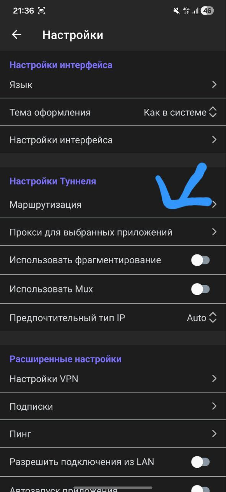
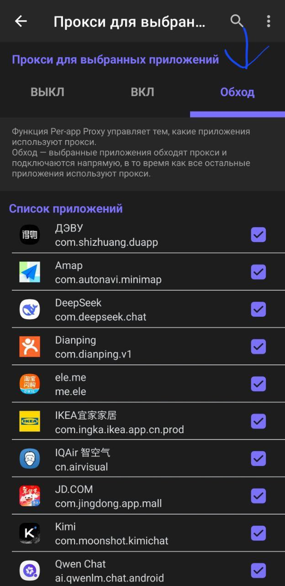

Настройка работы приложений через VPN в Happ
Запустите приложение Happ. В правом верхнем углу нажмите на значок шестерёнки.
Прокрутите вниз до раздела «Настройки Туннеля» и нажмите «Прокси для выбранных приложений».

Доступны три режима:
После выбора режима поставьте галочки напротив нужных приложений.

Выберите режим «ВКЛ» и отметьте только те приложения, которым нужен VPN — например Instagram, YouTube, Telegram.
Так остальные приложения (банки, доставка, карты) будут работать напрямую без потери скорости.